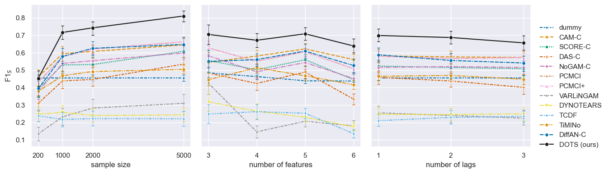
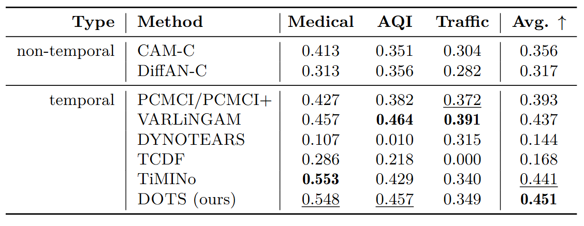

Overview
Evaluating causal discovery methods on time series can be tricky: every method has its own environment, input format, and output convention, and fair comparison requires sweeping hyperparameters and seeds across many datasets. The TSCD Benchmark packages all of that into a single reproducible Snakemake workflow. From data generation and preparation, through per-algorithm prediction in isolated conda environments, to evaluation against ground-truth graphs and a combined results table ready for analysis.
The benchmark accompanies the paper introducing DOTS, our diffusion-based causal discovery method for time series. The benchmark replicates all of the paper's experiments, and doubles as a general framework for benchmarking your own methods: adding an algorithm is one wrapper script, one conda env spec, and one config entry.
One workflow run: every algorithm × hyperparameter × dataset-instance combination, evaluated and aggregated.
What's included
Algorithms
DOTS, DiffAN, SCORE, CAM, DAS, NoGAM, PCMCI/PCMCI+, VARLiNGAM, DYNOTEARS, TCDF, TiMINo.
Datasets
A configurable synthetic time-series generator, plus three real-world datasets: Finance, fMRI, and CausalTime.
Metrics
Precision, recall, F1 and more. Computed on the summary and window graphs.
| Method | Source | Notes |
|---|---|---|
| DOTS (ours) | Sanchez et al., 2025 | Diffusion-based; multiple causal orderings + soft voting + temporal constraints |
| DiffAN | Sanchez et al., 2023 | Base method DOTS builds on |
| SCORE, CAM, DAS, NoGAM | dodiscover | Static methods, optionally with temporal constraints |
| PCMCI, PCMCI+ | tigramite | Constraint-based time-series methods |
| VARLiNGAM | lingam | Linear non-Gaussian model |
| DYNOTEARS | causalnex | Continuous-optimisation approach |
| TCDF | Nauta et al., 2019 | Attention-based neural method |
| TiMINo | Peters et al., 2013 | R implementation |
Example results
Two headline results from the paper, both produced end-to-end by this workflow.

Synthetic data: summary-graph F1 (F1S) as sample size, number of features, and number of lags vary. DOTS (black) leads across the whole grid; error bars show variation across repetitions.

Realistic CausalTime datasets (medical, air quality, traffic). Best in bold, second-best underlined. DOTS (bottom) obtains the best average score.
Quick start
Requires conda (Linux recommended). Run the small smoke-test experiment:
sh quickstart.shSee the README for full installation notes, replication instructions for each experiment, and how to plug in your own algorithms and datasets.
Citation
If you use the benchmark or DOTS in your work, please cite:
@article{sanchez2025causal,
title = {Causal Ordering for Structure Learning from Time Series},
author = {Pedro Sanchez and Damian Machlanski and Steven McDonagh and Sotirios A. Tsaftaris},
journal = {Transactions on Machine Learning Research},
issn = {2835-8856},
year = {2025},
url = {https://openreview.net/forum?id=hWuTzqggSd}
}Projects using the TSCD Benchmark
- Causal Ordering for Structure Learning from Time Series — paper, code
- Rethinking Chronological Causal Discovery with Signal Processing — paper
Used the benchmark in your own work? Open an issue and we'll add it here.